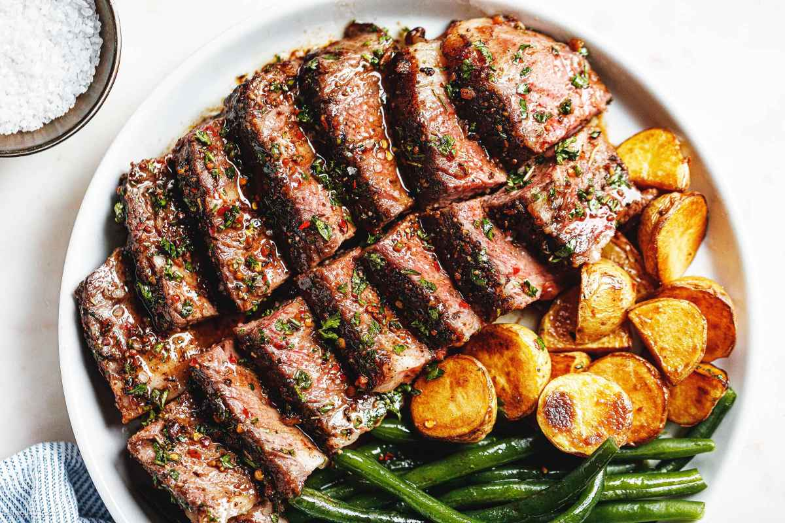

Garlic Butter Steak

This garlic butter steak recipe is a delicious and indulgent way to prepare a juicy steak.
The combination of garlic and butter creates a rich and flavorful sauce that perfectly complements the savory taste of the steak.
Whether you're cooking for a special occasion or just want to treat yourself to a restaurant-quality meal at home, this recipe is sure to impress.
Ingredients:
- 2 ribeye steaks (about 1 inch thick)
- Salt and pepper to taste
- 2 tablespoons olive oil
- 4 cloves garlic, minced
- 4 tablespoons unsalted butter
- Fresh parsley, chopped (optional, for garnish)
Instructions:
- Remove the steaks from the refrigerator and let them come to room temperature for about 30 minutes. This helps ensure even cooking.
- Season both sides of the steaks generously with salt and pepper.
- Heat the olive oil in a large skillet over medium-high heat until it shimmers. Add the steaks to the skillet and cook for about 4-5 minutes on each side for medium-rare, or adjust the cooking time to your desired level of doneness.
- Once the steaks are cooked to your liking, remove them from the skillet and set them aside to rest while you make the garlic butter sauce.
- In the same skillet, reduce the heat to medium and add the minced garlic. Sauté for about 1 minute until fragrant, being careful not to burn it.
- Add the unsalted butter to the skillet and let it melt, stirring it together with the garlic until well combined. Cook for another minute until the sauce is heated through.
- Return the steaks to the skillet and spoon the garlic butter sauce over them. Let them cook together for an additional minute or two, allowing the flavors to meld.
- Remove the steaks from the skillet again and let them rest for a few minutes before slicing. This helps the juices redistribute throughout the meat, resulting in a more tender and flavorful steak.
- Slice the steaks against the grain and serve with the garlic butter sauce drizzled over the top. Garnish with chopped fresh parsley if desired. Enjoy!
Back to home